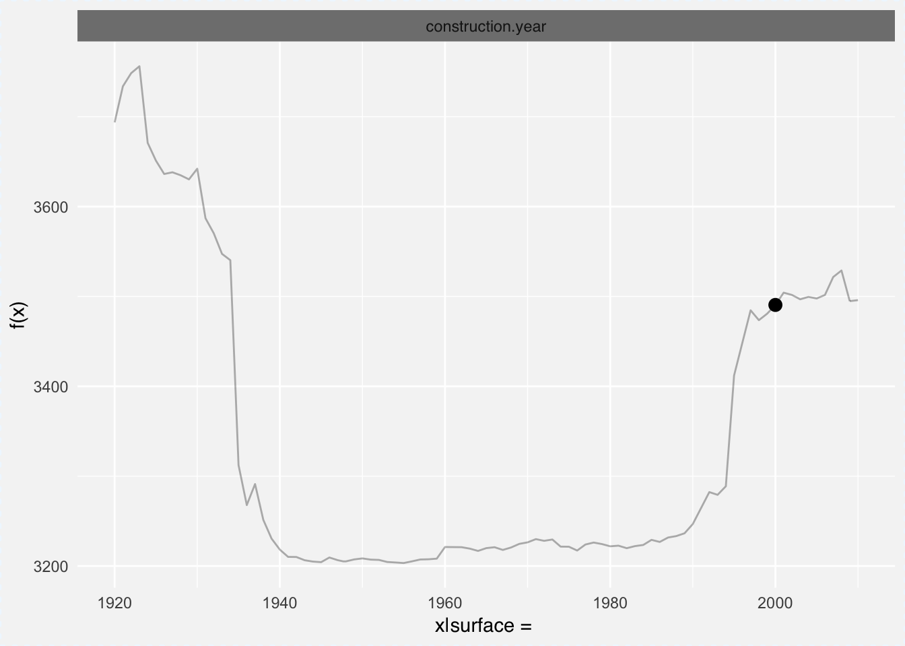
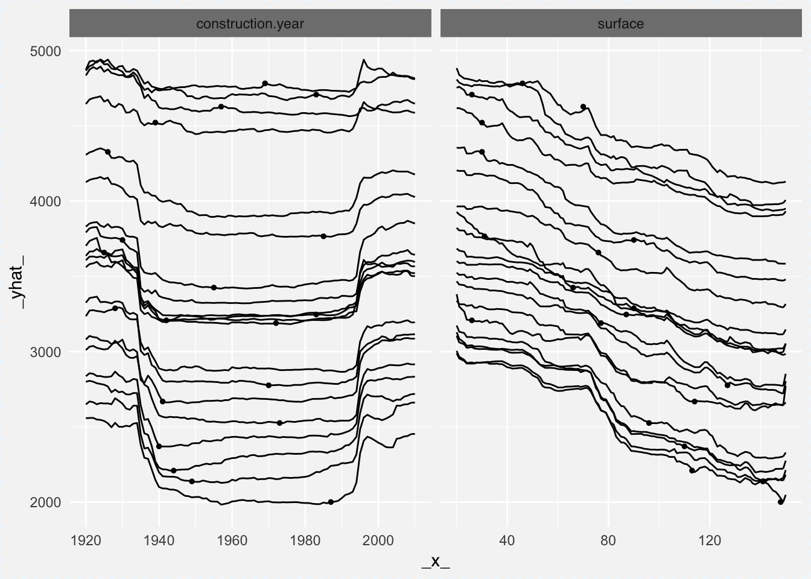

DALEX: Descriptive mAchine Learning EXplanations
Przemysław Biecek
2018-03-26
Chapter 1 Introduction
Machine Learning models are widely used and have various applications in classification or regression tasks. Due to increasing computational power, availability of new data sources and new methods, ML models are more and more complex. Models created with techniques like boosting, bagging of neural networks are true black boxes. It is hard to trace the link between input variables and model outcomes. They are use because of high performance, but lack of interpretability is one of their weakest sides.
In many applications we need to know, understand or prove how input variables are used in the model and what impact do they have on final model prediction. DALEX is a set of tools that help to understand how complex models are working.
1.1 Motivation

(Štrumbelj and Kononenko 2011Štrumbelj, Erik, and Igor Kononenko. 2011. “A General Method for Visualizing and Explaining Black-Box Regression Models.” In Proceedings of the 10th International Conference on Adaptive and Natural Computing Algorithms - Volume Part Ii, 21–30. ICANNGA’11. Berlin, Heidelberg: Springer-Verlag. http://dl.acm.org/citation.cfm?id=1997005.1997009.), (Tzeng and Ma 2005Tzeng, F. Y., and K. L. Ma. 2005. “Opening the Black Box - Data Driven Visualization of Neural Networks.” In VIS 05. IEEE Visualization, 2005., 383–90. https://doi.org/10.1109/VISUAL.2005.1532820.), (Puri et al. 2017Puri, N., P. Gupta, P. Agarwal, S. Verma, and B. Krishnamurthy. 2017. “MAGIX: Model Agnostic Globally Interpretable Explanations.” ArXiv E-Prints, June.), (Zeiler and Fergus 2014Zeiler, Matthew D., and Rob Fergus. 2014. “Visualizing and Understanding Convolutional Networks.” In Computer Vision – Eccv 2014, edited by David Fleet, Tomas Pajdla, Bernt Schiele, and TinneEditors Tuytelaars, 818–33. Springer International Publishing.)
1.2 Notation
This book describes explainers for different machine learning models. Some of these explainers are created by different research groups with different applications in mind.
To keep the notation consistent:
- \(x = (x_1, ..., x_p)\) stands for a vector of \(p\) variables/predictors.
- \(y\) stands for a vector with target variable. In some applications it will be a continuous variable in others it will be a binary variable.
- \(n\) stands for number of observations.
- \(f(x, \theta)\) stands for a model. We are considering models that are characterized by a set of parameters \(\theta\). In some applications \(\theta\) is a low level space of parameters - nice parametric models, in some applications \(\theta\) may have a very complex structure.
- \(\lambda\) stands for model meta-parameters which are not being directly optimized (like number of trees, max depth, some penalties etc.).
- \(g(x)\) stands for a function that pre-process variables. In some applications it may be a standardisation or other pre-processing.

1.3 Use case - Human Resources Analytics
To ilustrate applications of DALEX to binary classification problems we will use a dataset from Kaggle competition Human Resources Analytics. This dataset is avaliable in the breakDown package (P. Biecek 2017Biecek, Przemyslaw. 2017. BreakDown: BreakDown Plots. https://CRAN.R-project.org/package=breakDown.).
(#tab:hr_data)HR_data dataset from Kaggle competition Human Resources Analytics
| satisfaction_level | last_evaluation | number_project | average_montly_hours | time_spend_company | Work_accident | left | promotion_last_5years | sales | salary |
|---|---|---|---|---|---|---|---|---|---|
| 0.38 | 0.53 | 2 | 157 | 3 | 0 | 1 | 0 | sales | low |
| 0.80 | 0.86 | 5 | 262 | 6 | 0 | 1 | 0 | sales | medium |
| 0.11 | 0.88 | 7 | 272 | 4 | 0 | 1 | 0 | sales | medium |
| 0.72 | 0.87 | 5 | 223 | 5 | 0 | 1 | 0 | sales | low |
| 0.37 | 0.52 | 2 | 159 | 3 | 0 | 1 | 0 | sales | low |
| 0.41 | 0.50 | 2 | 153 | 3 | 0 | 1 | 0 | sales | low |
1.3.1 Logistic regression
In the following chapters to present explainers for logistic regression models we will use HR_glm_model.
##
## Call:
## glm(formula = left ~ ., family = "binomial", data = HR_data)
##
## Deviance Residuals:
## Min 1Q Median 3Q Max
## -2.2248 -0.6645 -0.4026 -0.1177 3.0688
##
## Coefficients:
## Estimate Std. Error z value Pr(>|z|)
## (Intercept) -1.4762862 0.1938373 -7.616 2.61e-14 ***
## satisfaction_level -4.1356889 0.0980538 -42.178 < 2e-16 ***
## last_evaluation 0.7309032 0.1491787 4.900 9.61e-07 ***
## number_project -0.3150787 0.0213248 -14.775 < 2e-16 ***
## average_montly_hours 0.0044603 0.0005161 8.643 < 2e-16 ***
## time_spend_company 0.2677537 0.0155736 17.193 < 2e-16 ***
## Work_accident -1.5298283 0.0895473 -17.084 < 2e-16 ***
## promotion_last_5years -1.4301364 0.2574958 -5.554 2.79e-08 ***
## saleshr 0.2323779 0.1313084 1.770 0.07678 .
## salesIT -0.1807179 0.1221276 -1.480 0.13894
## salesmanagement -0.4484236 0.1598254 -2.806 0.00502 **
## salesmarketing -0.0120882 0.1319304 -0.092 0.92700
## salesproduct_mng -0.1532529 0.1301538 -1.177 0.23901
## salesRandD -0.5823659 0.1448848 -4.020 5.83e-05 ***
## salessales -0.0387859 0.1024006 -0.379 0.70486
## salessupport 0.0500251 0.1092834 0.458 0.64713
## salestechnical 0.0701464 0.1065379 0.658 0.51027
## salarylow 1.9440627 0.1286272 15.114 < 2e-16 ***
## salarymedium 1.4132244 0.1293534 10.925 < 2e-16 ***
## ---
## Signif. codes: 0 '***' 0.001 '**' 0.01 '*' 0.05 '.' 0.1 ' ' 1
##
## (Dispersion parameter for binomial family taken to be 1)
##
## Null deviance: 16465 on 14998 degrees of freedom
## Residual deviance: 12850 on 14980 degrees of freedom
## AIC: 12888
##
## Number of Fisher Scoring iterations: 5Models used in this doccumentation are accessible via archivist package. To download the HR_glm_model model use the following instruction.
archivist::aread("pbiecek/DALEX/arepo/8fe19a108faf3ddfcabc3de3a0693234")1.3.2 Random forest
In the following chapters to present explainers for random forest models we will use HR_fr_model.
library("randomForest")
set.seed(1313)
HR_data$left <- factor(HR_data$left)
HR_rf_model <- randomForest(left~., data = HR_data, ntree = 100)
HR_rf_model##
## Call:
## randomForest(formula = left ~ ., data = HR_data, ntree = 100)
## Type of random forest: classification
## Number of trees: 100
## No. of variables tried at each split: 3
##
## OOB estimate of error rate: 0.75%
## Confusion matrix:
## 0 1 class.error
## 0 11407 21 0.001837592
## 1 91 3480 0.025483058Models used in this doccumentation are accessible via archivist package. To download the HR_rf_model model use the following instruction.
archivist::aread("pbiecek/DALEX/arepo/419d550a92fab6a5f28650130991e2cd")1.4 Use case - Wine quality
To ilustrate applications of DALEX to regression problems we will use a Wine quality dataset from Kaggle competition UC Irvine Machine Learning Repository.
url <- 'https://archive.ics.uci.edu/ml/machine-learning-databases/wine-quality/winequality-white.csv'
wine <- read.table(url, header = TRUE, sep = ";")
head(wine)Table 1.1: Wine quality dataset from UC Irvine Machine Learning Repository
| fixed.acidity | volatile.acidity | citric.acid | residual.sugar | chlorides | free.sulfur.dioxide | total.sulfur.dioxide | density | pH | sulphates | alcohol | quality |
|---|---|---|---|---|---|---|---|---|---|---|---|
| 7.0 | 0.27 | 0.36 | 20.7 | 0.045 | 45 | 170 | 1.0010 | 3.00 | 0.45 | 8.8 | 6 |
| 6.3 | 0.30 | 0.34 | 1.6 | 0.049 | 14 | 132 | 0.9940 | 3.30 | 0.49 | 9.5 | 6 |
| 8.1 | 0.28 | 0.40 | 6.9 | 0.050 | 30 | 97 | 0.9951 | 3.26 | 0.44 | 10.1 | 6 |
| 7.2 | 0.23 | 0.32 | 8.5 | 0.058 | 47 | 186 | 0.9956 | 3.19 | 0.40 | 9.9 | 6 |
| 7.2 | 0.23 | 0.32 | 8.5 | 0.058 | 47 | 186 | 0.9956 | 3.19 | 0.40 | 9.9 | 6 |
| 8.1 | 0.28 | 0.40 | 6.9 | 0.050 | 30 | 97 | 0.9951 | 3.26 | 0.44 | 10.1 | 6 |
1.4.1 Linear regression
In the following chapters to present explainers for gaussian regression models we will use wine_lm_model.
wine_lm_model <- lm(quality ~ fixed.acidity + volatile.acidity + citric.acid + residual.sugar + chlorides + free.sulfur.dioxide + total.sulfur.dioxide + density + pH + sulphates + alcohol,
data = wine)Models used in this doccumentation are accessible via archivist package. To download the wine_lm_model model use the following instruction.
archivist::aread("pbiecek/DALEX/arepo/b99a3d58016e2677221019652cff047f")1.5 Trivia

The Daleks are a fictional extraterrestrial race portrayed in the Doctor Who BBC series. Rather dim aliens, known to repeat the phrase Explain! very often.
Chapter 2 Model understanding
2.1 Feature importance
Explainers presented in this chapter are designed to better understand the global structure of a black box. Which variables are the most important? How do they influence the final result of a model?
2.1.1 Drop-out plots
Variable drop-outs are calculated via permutations. Simply the loss function is is compared between the full model and the model with single variable being permuted.
As a additional point for comparison a _baseline_ is calculated as a loss in model with permuted outcomes. This shall be highest possible loss.
Let’s see how it’s working for a random forest model.
library("DALEX")
library("breakDown")
library("randomForest")
HR_rf_model <- randomForest(left~., data = HR_data, ntree = 100)
HR_rf_model##
## Call:
## randomForest(formula = left ~ ., data = HR_data, ntree = 100)
## Type of random forest: classification
## Number of trees: 100
## No. of variables tried at each split: 3
##
## OOB estimate of error rate: 0.75%
## Confusion matrix:
## 0 1 class.error
## 0 11410 18 0.001575079
## 1 94 3477 0.026323159## Model label: randomForest
## Model class: randomForest.formula,randomForest
## Data head :
## satisfaction_level last_evaluation number_project average_montly_hours
## 1 0.38 0.53 2 157
## 2 0.80 0.86 5 262
## time_spend_company Work_accident left promotion_last_5years sales salary
## 1 3 0 1 0 sales low
## 2 6 0 1 0 sales medium## variable dropout_loss label
## 1 _full_model_ NA randomForest
## 2 _baseline_ NA randomForestNow we can plot these losses. Note that in the plot beow you see not only the variable importance, but also you see how the whole model works.

And here we have similar example for glm model.
HR_glm_model <- glm(left~., data = breakDown::HR_data, family = "binomial")
explainer_glm <- explain(HR_glm_model, data = HR_data, y = HR_data$left)
logit <- function(x) exp(x)/(1+exp(x))
vd_glm <- variable_dropout(explainer_glm, type = "raw",
loss_function = function(observed, predicted) sum((observed - logit(predicted))^2))
vd_glm## variable dropout_loss label
## 1 _full_model_ NA lm
## 2 _baseline_ NA lm
And for xgboost model.
library("xgboost")
model_martix_train <- model.matrix(left~.-1, breakDown::HR_data)
data_train <- xgb.DMatrix(model_martix_train, label = breakDown::HR_data$left)
param <- list(max_depth = 2, eta = 1, silent = 1, nthread = 2,
objective = "binary:logistic", eval_metric = "auc")
HR_xgb_model <- xgb.train(param, data_train, nrounds = 50)
explainer_xgb <- explain(HR_xgb_model, data = model_martix_train, y = HR_data$left, label = "xgboost")
vd_xgb <- variable_dropout(explainer_xgb, type = "raw")
vd_xgb## variable dropout_loss label
## 1 _full_model_ NA xgboost
## 2 _baseline_ NA xgboost
Of course you can plot all these models in a single plot. Then it is much easier to compare variable importances in different models.

NOTE: If you like to have all importances hooked to 0, you can do this as well
vd_rf <- variable_dropout(explainer_rf, type = "difference")
vd_glm <- variable_dropout(explainer_glm, type = "difference",
loss_function = function(observed, predicted) sum((observed - logit(predicted))^2))
vd_xgb <- variable_dropout(explainer_xgb, type = "difference")
plot(vd_rf, vd_glm, vd_xgb)
2.1.2 Forest plots
Forest plots were initially used in the meta analysis to visualise effects in different studies. But now they are frequently used to present summary characteristics for models with linear structure like these created with lm or glm functions.
There are various implementations of forest plots in R. Below we present examples for a glm model.
library("breakDown")
HR_glm_model <- glm(left~., data = HR_data, family = "binomial")
#HR_glm_model <- archivist::aread("pbiecek/DALEX/arepo/8fe19a108faf3ddfcabc3de3a0693234")In the package forestmodel (see (Kennedy 2017Kennedy, Nick. 2017. Forestmodel: Forest Plots from Regression Models. https://CRAN.R-project.org/package=forestmodel.)) one can use forest_model() function to draw a forest plot. This package is based on the broom package (see (Robinson 2017Robinson, David. 2017. Broom: Convert Statistical Analysis Objects into Tidy Data Frames. https://CRAN.R-project.org/package=broom.)) and this is why it handles a large variety of different regression models. An example for glm.
Figure 2.1: Forest plot created with forestmodel package

In the package sjPlot (see (Lüdecke 2017Lüdecke, Daniel. 2017. SjPlot: Data Visualization for Statistics in Social Science. https://CRAN.R-project.org/package=sjPlot.)) one can use sjp.*() to visualise structure of a * model or a wrapper plot_model(). Here is an example for glm model.
Figure 2.2: Forest plot created with sjPlot package

Note!
The forestmodel package handles factor variables in a better way while the plots from sjPlot are easier to read.
2.2 Variable response

The dimension of input \(x\) for black box models is usually high (large \(p\)). But in many cases small number of variables play important role in the model OR there are some reasons to believe that variables work in an additive fashion/low-level interactions in the model.
In such cases one may be interesting in verification how the conditional response for a selected interesting variable/variables looks like.
Methods presented below help to understand the conditional structure of a model.
2.2.1 Partial Dependence Plot
Partial Dependence Plots (see pdp package (Greenwell 2017Greenwell, Brandon M. 2017. “Pdp: An R Package for Constructing Partial Dependence Plots.” The R Journal 9 (1):421–36. https://journal.r-project.org/archive/2017/RJ-2017-016/index.html.)) for a black box \(f(x; \theta)\) calculates the expected output given a selected variable.
\[ p_i(x_i) = E_{x_{-i}}[ f(x^i, x^{-i}; \theta) ] \]
Of course this expectation cannot be calculated directly as we do not know fully the \(f()\) neither the distribution of \(x_{-i}\). This value is estimated by
\[ \hat p_i(x_i) = \frac{1}{n} \sum_{j=1}^{n} f(x^i_j, x_j^{-i}, \hat \theta) \]
Let’s see an example for the model HR_rf_model. Below we are using DALEX::single_variable function that is calling pdp::partial function to calculate pdp curve for variable satisfaction_level. Then the curve is plotted with generic plot.single_variable_explainer() function.
Marginal response plots are created in four steps.
- We need to fit model. For example a Random Forest model.
library("randomForest")
library("breakDown")
HR_rf_model <- randomForest(left~., data = breakDown::HR_data, ntree = 100)
# a79f3c7ec27499fb91e46ee70d423ac8
# archivist::aread("pbiecek/DALEX/arepo/a79f3c7ec27")- We need to create an explainer. It’s an interface that can be used to explain a black-box model.
- Now we can calculate the marginal response with the PDP method.
- And we are ready to plot it.

2.2.2 Model Comparisons
Marginal response plots are very useful in comparisons of different models. Let’s fit Generalized Linear Model, Random Forest Model and XGBoost Model to the same data.
Then we can use PDP plots to compare these models. Random Forest Model was fitted in the previous chapter. Here we are training remaining models.
HR_glm_model <- glm(left~., data = breakDown::HR_data, family = "binomial")
library("xgboost")
model_martix_train <- model.matrix(left~.-1, breakDown::HR_data)
data_train <- xgb.DMatrix(model_martix_train, label = breakDown::HR_data$left)
param <- list(max_depth = 2, eta = 1, silent = 1, nthread = 2,
objective = "binary:logistic", eval_metric = "auc")
HR_xgb_model <- xgb.train(param, data_train, nrounds = 50)Models are trained. Now we can create explainers and single variable explanations
logit <- function(x) exp(x)/(1+exp(x))
explainer_glm <- explain(HR_glm_model, data = HR_data)
expl_glm <- single_variable(explainer_glm, "satisfaction_level", "pdp", trans=logit)In order to compare these models it’s enough to plot all of them into a single chart.

2.2.3 Accumulated Local Effects Plot
As it is presented in the chapter @(pdpchapter), the Partial Dependence Plot presents the expected model response with respect to marginal distribution of \(x_{-i}\). In some cases, e.g. when repressors are highly correlated, expectation over the marginal distribution may lead to biases/poorly extrapolated model responses. Especially in area far from the training set (see (Apley 2017Apley, Dan. 2017. ALEPlot: Accumulated Local Effects (Ale) Plots and Partial Dependence (Pd) Plots. https://CRAN.R-project.org/package=ALEPlot.) for more details).
Accumulated local effects (ALE) plots (see ALEPlot package (Apley 2017Apley, Dan. 2017. ALEPlot: Accumulated Local Effects (Ale) Plots and Partial Dependence (Pd) Plots. https://CRAN.R-project.org/package=ALEPlot.)) solves this problem by using conditional distribution \(x_{-i}|x_i = x_i^*\). This leads to more stable and reliable estimates (at least when the predictors are highly correlated).
Let see an example for ALE plots. We can used the model and explainer created in steps 1-2 in the PDP chapter above.
Estimation of main effects for satisfaction_level is similar to the PDP curves. Here we are using DALEX::single_variable function that is calling ALEPlot::ALEPlot function to calculate ALE curve for variable satisfaction_level.
exel_rf <- single_variable(explainer_rf, variable = "satisfaction_level", type = "ale")
plot(exel_rf)
It may be useful to compare ALEPlots and PDP plots. Again, it’s simple with the generic DALEX function.

2.2.4 Individual Conditional Expectation Plot
Individual Conditional Expectations (ICE) may be considered as an extension of the PDP curves (see ICEbox package (Goldstein et al. 2015Goldstein, Alex, Adam Kapelner, Justin Bleich, and Emil Pitkin. 2015. “Peeking Inside the Black Box: Visualizing Statistical Learning with Plots of Individual Conditional Expectation.” Journal of Computational and Graphical Statistics 24 (1):44–65. https://doi.org/10.1080/10618600.2014.907095.)). Instead of plotting expected value over all observations, for ICE we are plotting individual conditional model responses. Average of ICE curves results in PDP curve.
An ICE curve for observation \(k\) over variable \(i\) may be defined as
\[ ice_k(x_i) = f(x^i, x_k^{-i}; \theta) \]
ICE curves can be plotted with pdp package. Note that curves may be cantered in a given point, this helps in identification of possible interactions.
library("pdp")
library("randomForest")
library("breakDown")
library("ggplot2")
HR_rf_model <- randomForest(left~., data = breakDown::HR_data, ntree = 100)
part_rf_satisfaction <- partial(HR_rf_model, "satisfaction_level")
part_rf_satisfaction <- partial(HR_rf_model, pred.var = "satisfaction_level", ice = TRUE)
plotPartial(part_rf_satisfaction, rug = TRUE, train = HR_data, alpha = 0.2)

Or with the ICEbox package.
library("ICEbox")
part_rf_satisfaction = ice(object = HR_rf_model, X = HR_data, y = HR_data$satisfaction_level,
predictor = "satisfaction_level", frac_to_build = .1)## ............................................................................................
As ICE curves are useful tool for identification of interactions, these individual curves may be clustered with the clusterICE function.

2.2.5 Mering Path Plot
The package ICEbox is not working for factor variables while the pdp package returns plots that are hard to interpret.
An interesting tool that helps to understand what is happening with factor variables is the factorMerger package (see (Sitko and Biecek 2017Sitko, Agnieszka, and Przemyslaw Biecek. 2017. FactorMerger: Hierarchical Algorithm for Post-Hoc Testing. https://github.com/MI2DataLab/factorMerger.)).
Here we have Merging Path Plot for a factor variable sales.
library("factorMerger")
path <- mergeFactors(HR_data$left, HR_data$sales, method = "fast-adaptive",
family = "binomial", abbreviate = FALSE)
plot(path, panel = "response") + theme_mi2()
Note that you can use the factorMerger package to understand predictions calculated with a black-box model. The random forest model HR_rf_model returns continuous response. But the factorMerger works for such variables as well.
In the top right panel one may see the distribution of predictions for the selected group.
HR_data$left_predicted <- predict(HR_rf_model)
path <- mergeFactors(HR_data$left_predicted, HR_data$sales, method = "fast-adaptive",
abbreviate = FALSE)
plot(path, panel = "response", responsePanel = "boxplot", nodesSpacing = "effects") + theme_mi2()
Chapter 3 Prediction understanding
3.1 Justifications for model predictions
Explainers presented in this chapter are designed to better understand the local structure of a black box in a single point. Example applications:
- explanations for predictions. Can be used to validate if a specific prediction is not accidental, is it based on variables important in the domain.
- examination of curvature around a specific point (single observation). Can be used to determine the strength of influence onto a final model. Is it an outlier?
There are more interesting applications. Find out some of them in the Why Should I Trust You? article (Ribeiro, Singh, and Guestrin 2016Ribeiro, Marco Tulio, Sameer Singh, and Carlos Guestrin. 2016. “‘Why Should I Trust You?’: Explaining the Predictions of Any Classifier.” In, 1135–44. ACM Press. https://doi.org/10.1145/2939672.2939778.).
3.1.1 Basics
Most ML algorithms do not learn from mistakes. One calculates predictions and there is no room for improvement.
But! The local predictions can change that! Understanding what causes wrong decisions may lead to model improvements. After all, if our prediction is wrong we shall update the model.
3.2 Local Interpretable (Model-agnostic) Visual Explanations

The live package (see (Staniak and Biecek 2017Staniak, Mateusz, and Przemysław Biecek. 2017. Live: Local Interpretable (Model-Agnostic) Visual Explanations.)) may be seen as an extension of the lime method (see (Ribeiro, Singh, and Guestrin 2016Ribeiro, Marco Tulio, Sameer Singh, and Carlos Guestrin. 2016. “‘Why Should I Trust You?’: Explaining the Predictions of Any Classifier.” In, 1135–44. ACM Press. https://doi.org/10.1145/2939672.2939778.)). It is based on mlr general framework for training of machine learning models (see more (Bischl et al. 2016Bischl, Bernd, Michel Lang, Lars Kotthoff, Julia Schiffner, Jakob Richter, Erich Studerus, Giuseppe Casalicchio, and Zachary M. Jones. 2016. “mlr: Machine Learning in R.” Journal of Machine Learning Research 17 (170):1–5. http://jmlr.org/papers/v17/15-066.html.)).
Let’s see an example. We will use the HR_rf_model trained with the randomForest package on Human Resources Analytics data.
Around a selected point we will fit a linear model.
library("live")
library("randomForest")
library("breakDown")
HR_data$left <- as.numeric(as.character(HR_data$left))
HR_rf_model <- randomForest(left~., data = HR_data,
ntree=100)
similar <- sample_locally(data = HR_data, explained_instance = HR_data[1,], explained_var = "left", size = 2000)
similar <- add_predictions(HR_data, similar, HR_rf_model)
trained <- fit_explanation( live_object = similar, white_box = "regr.lm", selection = FALSE)Fitted model may be plotted with waterfall plot …

… or forest plot …

For more details consult the following vignette.
3.3 breakDown

The breakDown package (P. Biecek 2017Biecek, Przemyslaw. 2017. BreakDown: BreakDown Plots. https://CRAN.R-project.org/package=breakDown.) explains components of model prediction for a single observation. Right now it’s working for lm and glm models. Break Down Plots are inspired by waterfall plots as in xgboostExplainer package.
Break Down Plots show the contribution of every variable present in the model.
Let’s see a use case for the wine dataset.
The problem that we are going to solve is to create a model that predicts wine quality and then use the model and explain it’s prediction for a single wine.
We start with a linear Gaussian model for quality with three dependent variables citric.acid, sulphates, alcohol.
## (Intercept) citric.acid sulphates alcohol
## 2.2847360 0.1480342 0.4660404 0.3153252There are just four model coefficients, so it’s easy to write down the formula for model predictions.
\[ \hat y = 2.2847360 + 0.1480342 * citric.acid + 0.4660404 * sulphates + 0.3153252 * alcohol \]
But is it easy to explain prediction for a single observation?
new.wine <- data.frame(citric.acid = 0.35,
sulphates = 0.6,
alcohol = 12.5)
predict(model, newdata = new.wine)## 1
## 6.557737We see, that this wine got higher quality score than the average. But why?
This is where breakDown package is useful. It takes parts of predictions and visualize them. These parts are being calculated by the predict function with type = "terms".
## citric.acid sulphates alcohol
## 1 0.002340197 0.0513358 0.6261516
## attr(,"constant")
## [1] 5.877909Now it’s easy to see that impact of the predicted score have the high alcohol level in this particular wine.
Please note, that these values are NOT calculated as x*beta.
## intercept citric.acid sulphates alcohol
## 1 2.284736 0.05181196 0.2796242 3.941565This is because, when we think about effect of an alcohol we would like to compare this particular wine with wine with average alcohol concentration not wine with zero alcohol.
So, since this particular wine is \(1.985733\) units of alcohol stronger than an average wine
## [1] 1.985733thus the final effect of the alcohol on the wine quality will be
## alcohol
## 0.6261516Same story is true for other variables.
These calculations are easy to do with breakDown package.
## contribution
## alcohol = 12.5 0.626
## sulphates = 0.6 0.051
## citric.acid = 0.35 0.002
## final_prognosis 0.680
## baseline: 5.877909
3.3.1 Model Comparisons
What if we have two or larger number of models? Not a problem for DALEX!
Let’s fit a model with 3 variables.
library("breakDown")
library("DALEX")
new.wine <- data.frame(citric.acid = 0.35,
sulphates = 0.6,
alcohol = 12.5,
pH = 3.36,
residual.sugar = 4.8)
wine_lm_model3 <- lm(quality ~ citric.acid + sulphates + alcohol,
data = wine)
wine_lm_explainer3 <- explain(wine_lm_model3, data = wine, label = "model_3v",
predict_function = stats::predict)
wine_lm_predict3 <- single_prediction(wine_lm_explainer3, observation = new.wine)
plot(wine_lm_predict3)
Let’s fit a second model with 4 variables.
wine_lm_model4 <- lm(quality ~ pH + residual.sugar + sulphates + alcohol,
data = wine)
wine_lm_explainer4 <- explain(wine_lm_model4, data = wine, label = "model_4v",
predict_function = stats::predict)
wine_lm_predict4 <- single_prediction(wine_lm_explainer4, observation = new.wine)
plot(wine_lm_predict4)
It’s easy to compare these models. Just plot both together side by side.

You can do this even for non linear models.
library("randomForest")
wine_rf_model4 <- randomForest(quality ~ pH + residual.sugar + sulphates + alcohol, data = wine)
wine_rf_explainer4 <- explain(wine_rf_model4, data = wine, label = "model_rf")
wine_rf_predict4 <- single_prediction(wine_rf_explainer4, observation = new.wine)
plot(wine_rf_predict4, wine_lm_predict4, wine_lm_predict3)
Chapter 4 Reproducibility
Packages are changing quite fast, especially these actively developed. Below you will find list of packages that were installed on my computer when I was preparing this documentation.
It is likely that some of described packages will change names of functions or arguments or structure of results. Use the version listed below to reproduce results form this book.
Note, that results, models and plots created in are were recorded with the archivist package (P. Biecek and Kosinski 2017Biecek, Przemyslaw, and Marcin Kosinski. 2017. “archivist: An R Package for Managing, Recording and Restoring Data Analysis Results.” Journal of Statistical Software 82 (11):1–28. https://doi.org/10.18637/jss.v082.i11.). Use archivist links to retrieve their binary copies directly to your R console.
## setting value
## version R version 3.4.4 (2018-03-15)
## system x86_64, darwin15.6.0
## ui X11
## language (EN)
## collate en_US.UTF-8
## tz Europe/Warsaw
## date 2018-03-26
##
## package * version date
## abind 1.4-5 2016-07-21
## agricolae 1.2-8 2017-09-12
## ALEPlot 1.0 2017-11-13
## AlgDesign 1.1-7.3 2014-10-15
## arm 1.9-3 2016-11-27
## assertthat 0.2.0 2017-04-11
## backports 1.1.2 2017-12-13
## base * 3.4.4 2018-03-15
## bayesplot 1.4.0 2017-09-12
## BBmisc 1.11 2017-03-10
## bindr 0.1 2016-11-13
## bindrcpp * 0.2 2017-06-17
## blme 1.0-4 2015-06-14
## bookdown 0.5 2017-08-20
## boot 1.3-20 2017-08-06
## breakDown * 0.1.5 2018-03-25
## broom 0.4.3 2017-11-20
## carData 3.0-0 2017-08-28
## checkmate 1.8.5 2017-10-24
## cli 1.0.0 2017-11-05
## cluster 2.0.6 2017-03-10
## coda 0.19-1 2016-12-08
## codetools 0.2-15 2016-10-05
## coin 1.2-2 2017-11-28
## colorspace 1.3-2 2016-12-14
## combinat 0.0-8 2012-10-29
## compiler 3.4.4 2018-03-15
## cowplot 0.9.1 2017-11-16
## crayon 1.3.4 2017-09-16
## DALEX * 0.2.0 2018-03-25
## data.table 1.10.4-3 2017-10-27
## datasets * 3.4.4 2018-03-15
## deldir 0.1-14 2017-04-22
## devtools 1.13.5 2018-02-18
## digest 0.6.15 2018-01-28
## dplyr 0.7.4 2017-09-28
## DT 0.1 2015-06-09
## effects 4.0-0 2017-09-15
## evaluate 0.10.1 2017-06-24
## expm 0.999-2 2017-03-29
## factorMerger * 0.3.6 2018-03-24
## forcats 0.3.0 2018-02-19
## foreign 0.8-69 2017-06-22
## forestmodel * 0.4.3 2017-04-16
## gdata 2.17.0 2015-07-04
## ggeffects 0.3.0 2017-11-27
## ggplot2 * 2.2.1 2016-12-30
## ggpubr 0.1.6 2017-11-14
## glmmTMB 0.2.0 2017-12-11
## glue 1.2.0 2017-10-29
## gmodels 2.16.2 2015-07-22
## graphics * 3.4.4 2018-03-15
## grDevices * 3.4.4 2018-03-15
## grid 3.4.4 2018-03-15
## gridExtra 2.3 2017-09-09
## gtable 0.2.0 2016-02-26
## gtools 3.5.0 2015-05-29
## haven 1.1.0 2017-07-09
## highr 0.6 2016-05-09
## htmltools 0.3.6 2017-04-28
## htmlwidgets 1.0 2018-01-20
## httpuv 1.3.5 2017-07-04
## ICEbox * 1.1.2 2017-07-13
## klaR 0.6-12 2014-08-06
## knitr 1.20 2018-02-20
## labeling 0.3 2014-08-23
## lattice 0.20-35 2017-03-25
## lazyeval 0.2.0 2016-06-12
## LearnBayes 2.15 2014-05-29
## live * 1.3.2 2018-01-25
## lme4 1.1-15 2017-12-21
## lmtest 0.9-34 2015-06-06
## lubridate 1.7.3 2018-02-27
## magrittr 1.5 2014-11-22
## MASS 7.3-49 2018-02-23
## Matrix 1.2-12 2017-11-15
## memoise 1.1.0 2017-04-21
## merTools 0.3.0 2016-12-12
## methods * 3.4.4 2018-03-15
## mime 0.5 2016-07-07
## minqa 1.2.4 2014-10-09
## mlr * 2.11 2017-03-15
## mnormt 1.5-5 2016-10-15
## modelr 0.1.1 2017-07-24
## modeltools 0.2-21 2013-09-02
## multcomp 1.4-8 2017-11-08
## munsell 0.4.3 2016-02-13
## mvtnorm 1.0-7 2018-01-25
## nlme 3.1-131.1 2018-02-16
## nloptr 1.0.4 2014-08-04
## nnet 7.3-12 2016-02-02
## parallel 3.4.4 2018-03-15
## parallelMap 1.3 2015-06-10
## ParamHelpers * 1.10 2017-01-05
## pdp * 0.6.0 2017-07-20
## pillar 1.1.0 2018-01-14
## pkgconfig 2.0.1 2017-03-21
## plyr 1.8.4 2016-06-08
## prediction 0.2.0 2017-04-19
## proxy 0.4-21 2018-01-04
## psych 1.7.3.21 2017-03-22
## purrr 0.2.4 2017-10-18
## pwr 1.2-1 2017-03-25
## R6 2.2.2 2017-06-17
## randomForest * 4.6-12 2015-10-07
## RColorBrewer 1.1-2 2014-12-07
## Rcpp 0.12.16 2018-03-13
## reshape2 1.4.3 2017-12-11
## rlang 0.2.0 2018-02-20
## rmarkdown 1.8 2017-11-17
## rprojroot 1.2 2017-01-16
## rstudioapi 0.7 2017-09-07
## sandwich 2.4-0 2017-07-26
## scales 0.5.0 2017-08-24
## sfsmisc * 1.1-1 2017-06-08
## shiny 1.0.5 2017-08-23
## sjlabelled 1.0.5 2017-11-09
## sjmisc 2.6.3 2017-11-28
## sjPlot * 2.4.0 2017-10-19
## sjstats 0.13.0 2017-11-23
## snakecase 0.5.1 2017-09-20
## sp 1.2-5 2017-06-29
## spData 0.2.6.4 2017-11-12
## spdep 0.7-4 2017-11-22
## splines 3.4.4 2018-03-15
## stats * 3.4.4 2018-03-15
## stats4 3.4.4 2018-03-15
## stringdist 0.9.4.7 2018-03-13
## stringi 1.1.7 2018-03-12
## stringr 1.3.0 2018-02-19
## survey 3.30-3 2014-08-15
## survival 2.41-3 2017-04-04
## TH.data 1.0-8 2017-01-23
## tibble 1.4.2 2018-01-22
## tidyr 0.8.0 2018-01-29
## tidyselect 0.2.4 2018-02-26
## TMB 1.7.12 2017-12-11
## tools 3.4.4 2018-03-15
## tufte 0.2 2016-02-07
## utils * 3.4.4 2018-03-15
## withr 2.1.0 2017-11-01
## xgboost * 0.6.4.1 2018-01-23
## xtable 1.8-2 2016-02-05
## yaImpute 1.0-29 2017-12-10
## yaml 2.1.18 2018-03-08
## zoo 1.8-0 2017-04-12
## source
## cran (@1.4-5)
## cran (@1.2-8)
## CRAN (R 3.4.2)
## CRAN (R 3.2.0)
## CRAN (R 3.4.0)
## CRAN (R 3.4.0)
## cran (@1.1.2)
## local
## CRAN (R 3.4.3)
## cran (@1.11)
## CRAN (R 3.4.0)
## CRAN (R 3.4.0)
## CRAN (R 3.4.0)
## CRAN (R 3.4.1)
## CRAN (R 3.4.4)
## local (pbiecek/breakDown@7591b59)
## cran (@0.4.3)
## CRAN (R 3.4.1)
## cran (@1.8.5)
## cran (@1.0.0)
## CRAN (R 3.4.4)
## cran (@0.19-1)
## CRAN (R 3.4.4)
## cran (@1.2-2)
## CRAN (R 3.4.0)
## CRAN (R 3.1.0)
## local
## cran (@0.9.1)
## CRAN (R 3.4.1)
## local (pbiecek/DALEX@NA)
## CRAN (R 3.4.2)
## local
## cran (@0.1-14)
## CRAN (R 3.4.3)
## cran (@0.6.15)
## CRAN (R 3.4.2)
## CRAN (R 3.2.0)
## CRAN (R 3.4.1)
## CRAN (R 3.4.1)
## cran (@0.999-2)
## local (geneticsMiNIng/FactorMerger@NA)
## cran (@0.3.0)
## CRAN (R 3.4.4)
## CRAN (R 3.4.0)
## CRAN (R 3.2.0)
## CRAN (R 3.4.3)
## CRAN (R 3.4.0)
## cran (@0.1.6)
## CRAN (R 3.4.3)
## cran (@1.2.0)
## CRAN (R 3.4.0)
## local
## local
## local
## CRAN (R 3.4.1)
## CRAN (R 3.2.3)
## CRAN (R 3.2.0)
## CRAN (R 3.4.1)
## CRAN (R 3.4.0)
## CRAN (R 3.4.0)
## cran (@1.0)
## CRAN (R 3.4.1)
## CRAN (R 3.4.1)
## CRAN (R 3.2.0)
## cran (@1.20)
## CRAN (R 3.2.2)
## CRAN (R 3.4.4)
## CRAN (R 3.4.0)
## CRAN (R 3.2.0)
## local (MI2DataLab/live@f38ef48)
## cran (@1.1-15)
## CRAN (R 3.2.0)
## cran (@1.7.3)
## CRAN (R 3.2.2)
## CRAN (R 3.4.4)
## CRAN (R 3.4.2)
## CRAN (R 3.4.0)
## CRAN (R 3.4.0)
## local
## CRAN (R 3.4.0)
## CRAN (R 3.1.1)
## cran (@2.11)
## CRAN (R 3.4.0)
## CRAN (R 3.4.1)
## CRAN (R 3.1.2)
## cran (@1.4-8)
## CRAN (R 3.2.3)
## cran (@1.0-7)
## CRAN (R 3.4.4)
## CRAN (R 3.2.2)
## CRAN (R 3.4.4)
## local
## cran (@1.3)
## cran (@1.10)
## CRAN (R 3.4.1)
## cran (@1.1.0)
## CRAN (R 3.4.0)
## CRAN (R 3.4.0)
## CRAN (R 3.4.0)
## cran (@0.4-21)
## CRAN (R 3.4.0)
## cran (@0.2.4)
## CRAN (R 3.4.0)
## CRAN (R 3.4.0)
## CRAN (R 3.2.0)
## CRAN (R 3.2.2)
## cran (@0.12.16)
## cran (@1.4.3)
## CRAN (R 3.4.3)
## cran (@1.8)
## CRAN (R 3.4.0)
## CRAN (R 3.4.1)
## cran (@2.4-0)
## CRAN (R 3.4.1)
## CRAN (R 3.4.0)
## CRAN (R 3.4.1)
## CRAN (R 3.4.2)
## CRAN (R 3.4.3)
## CRAN (R 3.4.2)
## CRAN (R 3.4.3)
## CRAN (R 3.4.2)
## cran (@1.2-5)
## cran (@0.2.6.4)
## cran (@0.7-4)
## local
## local
## local
## cran (@0.9.4.7)
## cran (@1.1.7)
## cran (@1.3.0)
## CRAN (R 3.1.2)
## CRAN (R 3.4.4)
## cran (@1.0-8)
## cran (@1.4.2)
## cran (@0.8.0)
## cran (@0.2.4)
## CRAN (R 3.4.3)
## local
## CRAN (R 3.4.0)
## local
## cran (@2.1.0)
## CRAN (R 3.4.3)
## CRAN (R 3.2.3)
## CRAN (R 3.4.3)
## cran (@2.1.18)
## CRAN (R 3.4.0)